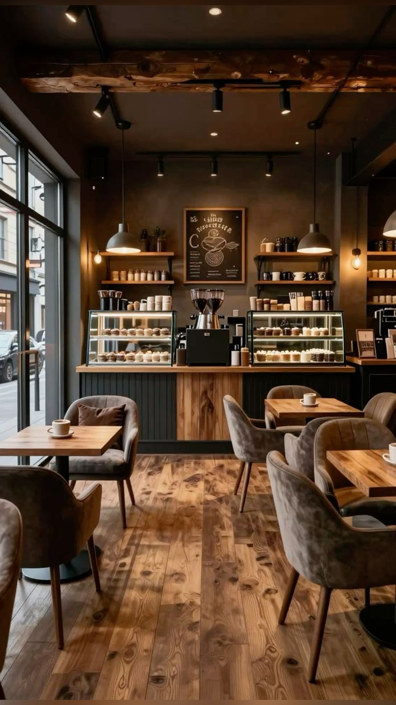
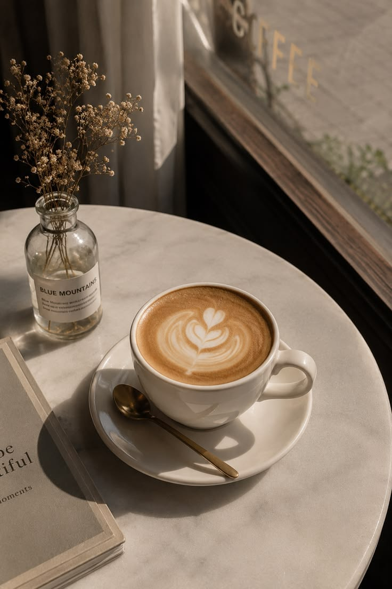
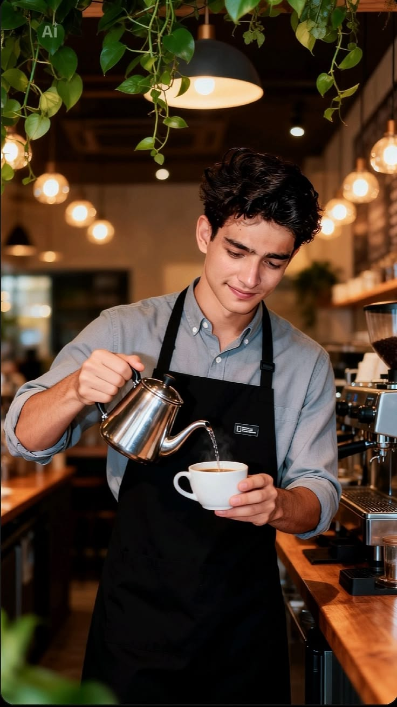

The philosophy
Coffee should follow you.
EMBER began with a simple belief: the coffee you carry should feel as intentional as the coffee you sit down for. Deeply roasted, quietly designed, always ready to move.

Made for the first minute
A slower start
to moving days.
Small-batch beans meet precise roasting and a generous finish. The result is coffee with presence—rich enough to wake you, balanced enough to stay with you.
Meet the blend
Roasted with restraint
Depth without
the heaviness.
We develop sweetness first: cacao, toasted sugar, and a gentle fruit brightness. The finish stays clean, whether you drink it black or soften it with milk.
See the ritualTasting notes
Dark, warm,
quietly bright.
A medium-dark profile built for everyday brewing—structured, soft, and never overworked.
The daily blend
One roast.
Every ritual.
Built to perform across espresso, filter, and the cup you take with you. Freshly roasted and packed in small runs.


Words from the counter
“A coffee ritual with the volume turned down.”Early owner · Lisbon
Your next cup
Carry the ritual.
Freshly roasted. Packed in small batches. Ready for wherever morning takes you.
Shop the blend
Behind the counter
It's our pleasure
serving you the best coffee in town.
Behind every order is a barista who's tasted the batch, dialed the grind, and knows exactly what a good morning should taste like. That care is the actual product.